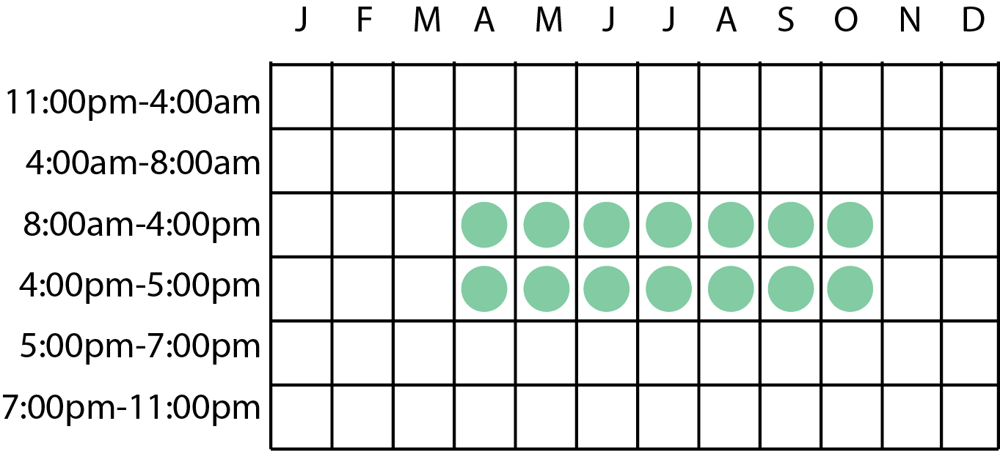
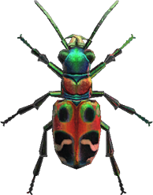
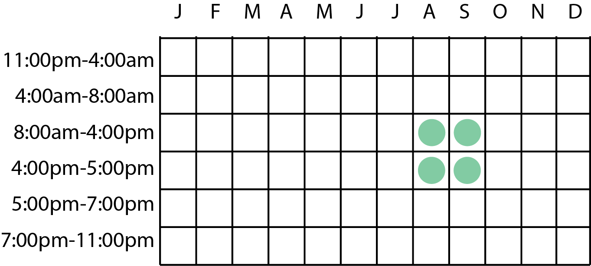

This insect can be found flying near flowers.
This insect can be found on spoiled turnips/candy/lollipops.

This insect can be found on any kind of tree. Sneak up slowly, they spook easily!
This insect can be found by shaking hardwood and cedar trees.
This insect will be found flying near water.
This insect can be found on the ground and will not be out in the rain.
This insect will be found on palm trees.

This insect will be found on hardwood and cedar trees.

Can be found by hitting rocks.
This will be found on hardwood and cedar trees.
This insect can be found on tree stumps.
This butterfly will be flying all around your island.

This butterfly will be flying all around your island.
This insect will be found on the grass and will not be found when it's raining.
This insect will be found on palm trees.
This insect will be found flying near water.
This insect will be found flying near water. They move quickly!
This insect will be found on rivers and ponds.
This insect will be found on any kind of tree.

This insect will be found on the ground pushing snowballs.
This insect will be found on the ground.
This butterfly will be found flying near flowers.
Fleas are found on villagers. They will look like they are in distress - swing your net at them to catch a flea.
This insect will be found flying near water.
Flies will be found near trash or rotten turnips.

This insect can be found on hardwood or cedar trees.
This insect can be found on trees of any kind.
This insect will be found on rivers or ponds and will glide around.
This insect will be found on palm trees.
This insect will be found on palm trees. Careful, they spook easily!


This insect will be found on palm trees.
This insect will be found on the ground.
This butterfly will be found flying near flowers.
These are found on the shoreline disquised as seashells. As you approach, they will tremble until they pop out and start walking away.
This insect will be found flying near flowers.

This insect can be found on palm trees.
This insect can be found on trees of any kind.

This insect can be found on palm trees.

This insect can be found on palm trees.

This insect will be found on tree stumps.
This insect will be found on flowers.

This insect will be found on the ground.
This insect will be found flying near flowers.
This insect will be found on flowers.
This insect will be found on flowers.
This insect can be found on the ground.
This insect can be found on any kind of tree.
This insect will be found underground. As you walk around you may hear a chirping sound. Get as close to the source as you can and start digging!
This butterfly can be found flying near flowers.
This insect can be found flying around your character.
This insect will be found flying near light sources.
This insect is only found on white flowers.

This butterfly will be found flying near flowers.
This butterfly will be found flying near blue, purple, or black flowers.
This insect will be found by hitting rocks.
This insect can be found on rivers and ponds.
This insect can be found flying near flowers.

This insect can be found on trees of any kind.
This butterfly will be found flying near flowers.

This insect can be found flying near water.

This insect can be found on the ground.

This insect can be found on hardwood or cedar trees.
This insect can be found on tree stumps.
This insect can be found on any kind of tree.
This insect can be found on any kind of tree.
These will be found on the ground. Be careful approaching them - if they touch you, you will faint.
Snails will be found on rocks and bushes. They spawn more on rainy days.
Spiders will be found by shaking hardwood or cedar trees.
This butterfly will be found on flowers.

These will be found on the ground. Be careful approaching them - if they touch you, you will faint.

These insects will be found on the ground.
These butterflies will be found flying all around your island.
This insect can be found on tree stumps.
This insect can be found on hardwood and cedar trees.
This insect will lay near a tree and will look like a dropped item. As you approach it, it wiggles and turns into the insect.

This insect can be found on any kind of tree.
Can be found by shaking non-fruit hardwood or cedar trees. If you get stung, your villagers will go on and on about how ugly you look. The sting can be fixed with medicine.

This insect is found on beach rocks.

This butterfly will be found flying all around your island.
No results found. Please try another search.